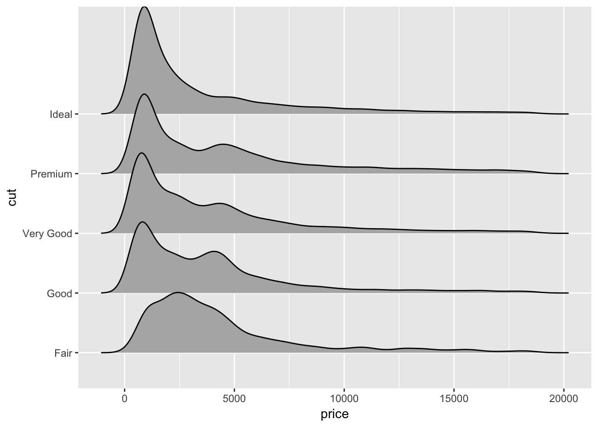

Beautiful graphics with ggplot2
This document is the web-based version of a presentation given through the University of Idaho library workshop series on September 12, 2017.
What is ggplot2?
an R package for data visualization
implements the “grammar of graphics”
Why ggplot2?
Popular (well-supported, great community)
Open source (like all of R)
Easy to use (after a learning curve)
Aesthetically pleasing
Built for multi-variate data
Reproducible figures
Goals for today
Teach you enough that you know how to teach yourself more!
Introduce “grammar of graphics” concepts
- Practice!
- samples with built-in data
- preparing data
- samples with (more interesting?) data
Grammar of graphics
data with variables mapped to aesthetics
one or more geometric layers
a scale for each aesthetic mapping
a coordinate system
a facet specification
If this is confusing, don’t worry - the main message here is that there is a structured grammar underlying ggplot2.
Let’s try it!
First, we need data.
Let’s use the built-in R dataset, “diamonds”.
| carat | cut | color | clarity | depth | table | price | x | y | z |
|---|---|---|---|---|---|---|---|---|---|
| 0.23 | Ideal | E | SI2 | 61.5 | 55 | 326 | 3.95 | 3.98 | 2.43 |
| 0.21 | Premium | E | SI1 | 59.8 | 61 | 326 | 3.89 | 3.84 | 2.31 |
| 0.23 | Good | E | VS1 | 56.9 | 65 | 327 | 4.05 | 4.07 | 2.31 |
| 0.29 | Premium | I | VS2 | 62.4 | 58 | 334 | 4.20 | 4.23 | 2.63 |
| 0.31 | Good | J | SI2 | 63.3 | 58 | 335 | 4.34 | 4.35 | 2.75 |
| 0.24 | Very Good | J | VVS2 | 62.8 | 57 | 336 | 3.94 | 3.96 | 2.48 |
Data
ggplot(data = diamonds)
Aesthetics: aes()
ggplot(data = diamonds,
aes(x = carat, y = price))Geometric object: geom_
ggplot(data = diamonds,
aes(x = carat, y = price)) +
geom_point()Add more aesthetics…
ggplot(data = diamonds,
aes(x = carat, y = price, color = clarity)) +
geom_point()Why didn’t we do this?
ggplot(data = diamonds,
aes(x = carat, y = price), color = clarity) +
geom_point()
Putting rcolor = clarity outside of the “aesthetics” call meant that ggplot didn’t know that it was supposed to map data to the “color” aesthetic.
We could get this instead:
ggplot(data = diamonds,
aes(x = carat, y = price)) +
geom_point(color = "magenta")Our original plot
(with a small difference:)
ggplot(data = diamonds,
aes(x = carat, y = price)) +
geom_point(aes(color = clarity))
Add more geoms:
ggplot(data = diamonds,
aes(x = carat, y = price)) +
geom_point(aes(color = clarity)) +
geom_smooth()Change geom appearance:
ggplot(data = diamonds,
aes(x = carat, y = price)) +
geom_point(aes(color = clarity)) +
geom_smooth(color = "black", size = 0.8, linetype = 2)Make it look nicer:
ggplot(data = diamonds,
aes(x = carat, y = price)) +
geom_point(aes(color = clarity)) +
geom_smooth(color = "black", size = 0.8, linetype = 2) +
theme_few()Try facets!
ggplot(data = diamonds,
aes(x = carat, y = price)) +
geom_point(aes(color = clarity)) +
geom_smooth(color = "black", size = 0.8, linetype = 2) +
facet_wrap(~cut)More facets!
ggplot(data = diamonds, aes(x = carat, y = price)) +
geom_point(aes(color = clarity), size = 0.5) +
facet_grid(color~cut)Try out color scales
ColorBrewer is useful and popular:
ggplot(data = diamonds, aes(x = carat, y = price)) +
geom_point(aes(color = clarity)) +
theme_few() +
scale_color_brewer(type = "qual", palette = "Set2")
Different plot types?
ggplot(data = diamonds,
aes(x = clarity, y = price)) +
geom_violin() Try an extension:
ggplot(data = diamonds,
aes(x = price, y = cut)) +
geom_joy()
Adjust color scales:
ggplot(data = diamonds,
aes(x = price, y = cut, color = cut, fill = cut)) +
geom_joy(alpha = 0.6, scale = 5) +
scale_fill_viridis(option = "A", discrete = TRUE) +
scale_color_viridis(option = "A", discrete = TRUE) +
theme_few()
Another color scale:
ggplot(data = diamonds,
aes(x = price, y = cut, fill = cut)) +
geom_joy(alpha = 1, scale = 5) +
scale_fill_manual(values = wes_palette("Darjeeling")) +
theme_few()
Sometimes we need to transform data.
kable(head(iris))| Sepal.Length | Sepal.Width | Petal.Length | Petal.Width | Species |
|---|---|---|---|---|
| 5.1 | 3.5 | 1.4 | 0.2 | setosa |
| 4.9 | 3.0 | 1.4 | 0.2 | setosa |
| 4.7 | 3.2 | 1.3 | 0.2 | setosa |
| 4.6 | 3.1 | 1.5 | 0.2 | setosa |
| 5.0 | 3.6 | 1.4 | 0.2 | setosa |
| 5.4 | 3.9 | 1.7 | 0.4 | setosa |
Wide or long?
iris_long <- melt(iris, id.vars = ("Species"))
kable(head(iris_long))| Species | variable | value |
|---|---|---|
| setosa | Sepal.Length | 5.1 |
| setosa | Sepal.Length | 4.9 |
| setosa | Sepal.Length | 4.7 |
| setosa | Sepal.Length | 4.6 |
| setosa | Sepal.Length | 5.0 |
| setosa | Sepal.Length | 5.4 |
Plot the data:
ggplot(iris_long, aes(x = Species, y = value, fill = variable)) +
geom_bar(stat = 'identity', width = 1) +
theme_bw()
Change coordinates
ggplot(iris_long,
aes(x = Species, y = value, color = variable, fill = variable)) +
geom_bar(stat = 'identity', width = 1) +
coord_polar(theta = 'x') +
theme_bw()
Try out a new dataset:
kable(head(gapminder))| country | continent | year | lifeExp | pop | gdpPercap |
|---|---|---|---|---|---|
| Afghanistan | Asia | 1952 | 28.801 | 8425333 | 779.4453 |
| Afghanistan | Asia | 1957 | 30.332 | 9240934 | 820.8530 |
| Afghanistan | Asia | 1962 | 31.997 | 10267083 | 853.1007 |
| Afghanistan | Asia | 1967 | 34.020 | 11537966 | 836.1971 |
| Afghanistan | Asia | 1972 | 36.088 | 13079460 | 739.9811 |
| Afghanistan | Asia | 1977 | 38.438 | 14880372 | 786.1134 |
Take a look at the data:
ggplot(gapminder,
aes(x = year, y = lifeExp, color = gdpPercap)) +
geom_line(aes(group = country)) +
facet_grid(continent~.) +
scale_color_viridis(trans = "log") +
theme_few()
A scatter plot:
ggplot(gapminder, aes(x = gdpPercap, y = lifeExp)) +
geom_point()
Who’s the outlier?
gapminder %>% filter(gdpPercap > 60000)## # A tibble: 5 x 6
## country continent year lifeExp pop gdpPercap
## <fctr> <fctr> <int> <dbl> <int> <dbl>
## 1 Kuwait Asia 1952 55.565 160000 108382.35
## 2 Kuwait Asia 1957 58.033 212846 113523.13
## 3 Kuwait Asia 1962 60.470 358266 95458.11
## 4 Kuwait Asia 1967 64.624 575003 80894.88
## 5 Kuwait Asia 1972 67.712 841934 109347.87Deal with overplotting:
ggplot(gapminder, aes(x = gdpPercap, y = lifeExp)) +
geom_hex()
Another way to avoid overplotting:
ggplot(gapminder, aes(x = gdpPercap, y = lifeExp)) +
geom_density2d(aes(color = ..level..), bins = 20) +
scale_color_viridis()
A little more complicated:
p <- ggplot(gapminder, aes(x = gdpPercap, y = lifeExp)) +
geom_point(aes(color = continent, size = pop), alpha = 0.8) +
scale_x_continuous(trans = 'log') +
facet_wrap(~year) +
scale_color_brewer(type = "Qual", palette = "Accent") +
theme_hc(bgc = 'darkunica') +
theme(text = element_text(size = 9))A little more complicated:
p
Let’s make a map!
Prepare data:
country_df <- map_data('world') %>%
rename("country" = "region")
country_df$country[country_df$country == "USA"] <- "United States"
#Take the mean across all years for each country:
gapminder_means <- gapminder %>%
group_by(country, continent) %>%
summarise(lifeExp = mean(lifeExp),
pop = mean(pop),
gdpPercap = mean(gdpPercap))
plot_dat <- left_join(gapminder_means, country_df, by = "country")Make the map:
ggplot(plot_dat) +
geom_polygon(aes(x = long, y = lat, fill = lifeExp, group = group)) +
scale_fill_viridis(option = "A") +
coord_quickmap() +
theme_few()
More plot ideas?
What questions could we ask with this data?
How could we visually answer those questions?
Where to learn more:
- Stack Overflow/Google
- Books:
- R for Data Science: http://r4ds.had.co.nz/program-intro.html
- Ggplot2: Elegant graphics for data analysis: https://www.amazon.com/ggplot2-Elegant-Graphics-Data-Analysis/dp/0387981403 (may also be available for free at github).
- Data visualization for social science: http://socviz.co/
- Papers:
- Wickham grammar of graphics: http://byrneslab.net/classes/biol607/readings/wickham_layered-grammar.pdf
- Wickham tidy data: https://www.jstatsoft.org/article/view/v059i10
- Tutorials, cheatsheets, websites:
- Twitter:
- @hadleywickham, @ClausWilke, @JennyBryan, @RLadiesGlobal, @rstudiotips